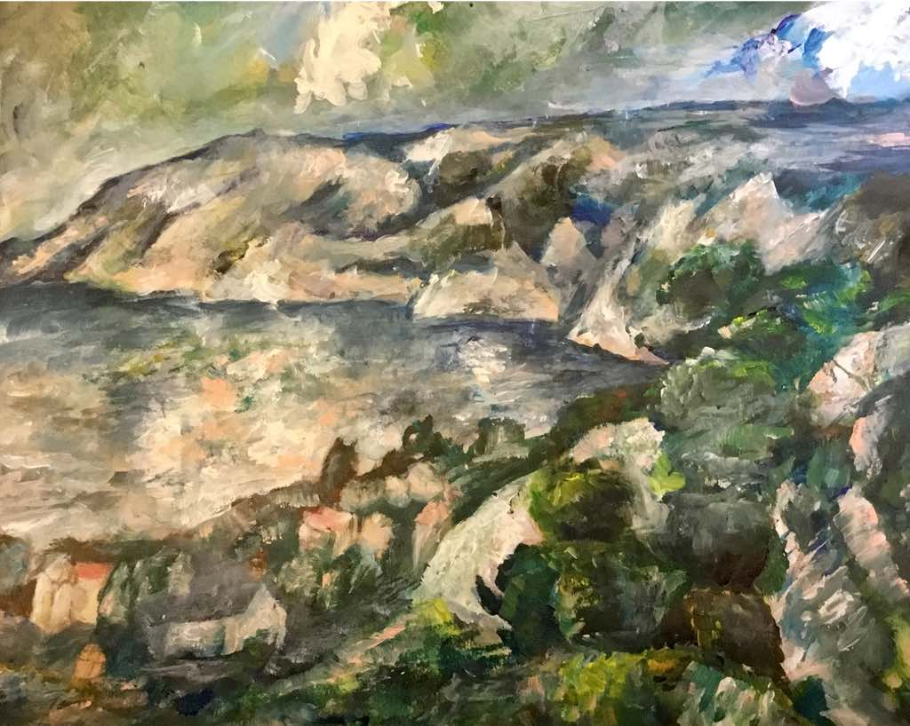

EPQs and HPQs are, despite not nearly as well-known as GCSEs or A levels, a pretty significant qualification for a student to undertake during Senior School or Sixth Form. These project-based qualifications require a large amount of independent study and dedication outside the classroom, and this is why many students struggle to make the grades they aim for or sometimes never complete them.
I submitted my AQA Extended Project Qualification in 2019 and received an A*, with a mark of 48 out of 50. My EPQ was art-based with my sketchbook submitted as my artefact. You can view my submitted artefact and read my final essay here, which analysed different 19th century artists and considered what techniques and methods made an artist typically “Impressionist”. My sketchbook showed my entire EPQ journey, from initial mind maps to a set of paintings that offered a visual representation of what Impressionism looked like.
This article outlines 5 important tips I think all EPQ/HPQ students should know, whether they are writing an essay or creating an artefact. I've also included multiple excerpts from my log book, a key component of an EPQ which is often rushed or left to the last minute. I hope this can make the EPQ process less daunting to those who are unsure where to start or lacking support in their project.
1. A clear, research-based title

Your EPQ is all about research. It's so important to have this at the forefront of your mind throughout your project, otherwise it's easy to drop marks. For an artefact in particular, you could create the most ground-breaking invention ever, or draw something worthy that Picasso would marvel at, but if you haven't got some sort of research or development to back it up, then you will struggle to pick up top marks.
So, in order to stay on track, a research-based title can really help focus your project. For my EPQ, my title focus shifted a lot, becoming more and more focused with each revision. This allowed me to find a niche which set up a clear area to research.
Students must choose a topic, plan, research and develop their idea and decide on their finished product.
Consider the following two working-titles for my EPQ project:
- What makes a true Impressionist artist?
- Is use of light and colour the sole feature that defines the Impressionist art era, or are there more significant motives behind the movement?
Which of these sounds clearer to you? Which would be easier to research? Granted, they seem like pretty different topics but, upon closer inspection, the latter title became a much more focused version of the former. While the former is very subjective, and could be written largely as an opinion piece, the second requires some level of research and professional sources which are necessary in an EPQ.
Generally, I have stuck to my initial concept to focus on three key Impressionist artists, looking at the extent they can be considered “true Impressionists”, based on the artistic techniques used. I have continued to display my research process through my sketchbook, including studies, gallery research and initial ideas for my final piece. I continue to plan to complete my project with a painting (or multiple) which reflects what I have learnt about Impressionist art during my EPQ.
However, I have found, through researching further into these artists, that there are features besides the use of colour in art which make artists Impressionists, deviating away from my initial plan to focus on how all artists use light/colour. Hence I have changed the title of my EPQ to reflect to what extent can light/colour be considered the main feature of Impressionist art, which I believe more accurately demonstrates what I have learnt from studying Monet, Degas and Cézanne.
Excerpt from my 'Mid-project review'2. Depict a journey
Since you aren't exactly being taught lessons on your EPQ subject, it is important to show some sort of progression during your project. Did you initially plan to give one argument, but changed paths based on new research you uncovered? Did you feel your EPQ taught you time management skills through having to create your own time plan? Have your research abilities improved by undertaking an EPQ? While the latter two are great points to talk about in your 'Summary and reflection', the former should be something you constantly consider throughout completing both your log book, and maybe even your essay.
Originally, I planned to have a large series of paintings that demonstrate the key ideas of the Impressionists; however, after discussion with the school’s art department, I decided to reduce this to a series of two paintings, in order to develop these as fully as possible in the time I have, while still showing the contrast evident in so many Impressionist works.
[...] Another way in which I have changed my EPQ is making my sketchbook my artefact, rather than my final painting; I feel that my sketchbook is a better demonstration of the amount of research that has gone into my EPQ and has become a visual representation of my project. I plan to include photos and documentation of my final piece so that my sketchbook will show the full journey of my EPQ.
Excerpts from my 'Project product review' and 'Mid-project review'3. Understand the Assessment Objectives
This ties in pretty well with the first two points, but in order to score highly, you should try to regularly check the assessment objectives for your EPQ and make sure you've got plenty of high-level evidence for each AO. Here's a breakdown of the AQA EPQ Assessment Objectives (as of 2020), along with how you can pick up marks on each one.
- Manage: Make sure you show evidence of planning your time and your project. Your 'Planning review' is perfect for this - you can try a detailed timeline or even a Gantt chart, but make sure every stage of your EPQ is spelt out in advance.
- Use Resources: This is your research AO. You should use multiple sources, critically assess them and consider their strengths and weaknesses.
- Develop and Realise: This makes up a whooping 40% of your grade and is the bulk of your work - essentially, you need to take your planning and research stages, and make them into something that tackles your specific EPQ area. This is the difference between simply stating your sources, and drawing thoughtful conclusions from them.
- Review: Lastly, this AO assesses your evaluation of the EPQ. It includes primarily your presentation and your log book 'Summary and reflection'. Consider what has gone well during your project and whether or not you've achieved the aims set out at the beginning of your EPQ.
4. Find a range of reliable sources...
...even if it means scouring some hidden nocks in your school's art department for every last book on Impressionist art methods! I spent more hours in the art room than the A Level artists some weeks, just so I could skim art history books with the hopes of finding something that could be relevant to techniques rather than the life history of specific artists.
I was able to collect research from the National Art Gallery, including photos, first-hand observational studies and the gallery’s book for the exhibition. Degas is one of the more famous Impressionists, who frequently experimented with colour as well as composition, which could make him a useful artist to research further. Generally, it is important to look at art first-hand in order to analyse and appreciate it best, hence why I plan to go to local art galleries, which are easily accessible, in order to gain further research about the Impressionists.
[...] I hope to look at a wide array of sources and books in order to find the most reliable information; these books all focus on Impressionism (or an Impressionist) which would imply they are well researched. By looking at more than one book on Monet and other Impressionists, I hope to obtain a better idea of what techniques they used in their artworks. [...] I plan to research and focus on a number of key paintings which I find are distinct to the Impressionist era. As someone who has concentrated on still life in the past, I thought looking in more detail at one of Monet’s few still life paintings could be a good starting point for researching his technique.
Excepts from my 'Candidate proposal: Initial resources'Remember that despite how easy it is to just go online to research on Wikipedia, it's also important to check who has written the source, and why. There might be some bias that could lead you to false conclusions. Try to look at books or research papers where you know that the authors are well-known in their field. You should still analyse bias in their work, but at least you can trust that its well-written and contains a reasonable argument.
5. Trust your supervisor
They do mark your projects, after all.
With any coursework-based assessment, it is always important to listen to your supervisor or teacher, even if you don't necessarily agree with them. Since they are ultimately the ones giving you your grades, any advice that they give you which you don't follow will only cost you marks. Since EPQs are 100% coursework-based, this is absolutely one of the best pieces of advice I can give.
Similarly, if you have the opportunity to meet with your supervisor frequently, take it! Continue to ask them the question "what can I do to make this better?" or "what grade am I currently working at?" - having that kind of clarity during your EPQ is really helpful and avoids any particularly unexpected surprises come results day.
At the end of the day, completing an EPQ can be a hugely rewarding project, but it's helpful to know what you're getting into. Hopefully these tips are useful to those starting out or struggling with their project.
Below you can read my full 'Summary and reflection' from my log book, the final section which analyses your EPQ process from start to finish. Again, my essay and artefact are also online and available to view here. I hope this article has been somewhat helpful and I wish you the best with your HPQ/EPQ.
If you're new to my blog, welcome! My name is Jenny and I'm an artist, studyblogger and maths student currently at University. Please consider subscribing to my blog for new articles (just scroll down) or checking out my Instagram @pastel.inspire for regular content. Have a great day!
Summary and reflection
The purpose of my EPQ was to analyse Impressionist artists’ work and conclude whether or not use of light and colour is the sole feature that defines the Impressionist art era, or whether there more significant motives behind the movement. My artefact was a sketchbook that documented the entire process of my EPQ, from initial research and art studies to planning for a final painting. Part of my project included a series of two paintings, based upon the techniques and aims I’d learnt as part of my research, to get a first-hand insight into the thought process of the Impressionists and develop my understanding of the artists.
Originally, the focus of my project had been to discuss to what extent various artists of that time period could be considered “true Impressionists”, however I soon found that this topic was too vague as I struggled to analyse all areas of an artist’s style and technique. I then decided to focus on the use of light and colour by artists, as I initially assumed that capturing light using colour was the main motive of the Impressionists. Hence, I began by focusing on Claude Monet, as I knew he was a key Impressionist of the time. However, as I developed my research, I found that Monet’s focus on capturing light was due to another, much broader motive: capturing a moment in a scene. Following this discovery, I found that Monet associated creating an impression not only with atmospheric colours, but in other areas of his paintings, such as with liberal, broad strokes leaving undefined features in his works.
Following this discovery, I adjusted my area of research to a more critical analysis of how use of light and colour could not be considered Impressionist on its own– it had to be part of the greater aim to capture a spontaneous moment in time. I decided to research in depth two artists from the Impressionist era with very different styles, to support my idea that Impressionist art was defined by creating an impression rather than unique use of colour. I analysed Edgar Degas, who had a very different style to Monet, preferring to focus on the human form rather than colourful landscapes; despite this, I learnt that Degas shared that same aim with Monet to capture a moment, yet achieved this in a very different way, using cropped compositions and loose soft pastel sketches. In contrast, I also researched Paul Cézanne to support my statement that colour was not enough to define an artist as Impressionist. While Cézanne is widely considered an Impressionist by the public today, due to his bright colour palette, various art historians actually believe that Cézanne led the Post-Impressionist movement, since he focused on creating a crystalline composition with a carefully planned composition; this approach is very different to that of Monet and Degas, with Cézanne aiming to capture a period of time rather than a moment. This supported my revised argument that creating an impression was the main feature and aim of Impressionist artists, with Cézanne giving evidence as to why the Impressionist era was unique to any neighbouring art era.
As a result of my project, I’ve learnt a huge amount about the history of the Impressionists. I began my EPQ assuming that art eras were defined by the techniques an artist used, while in reality they are based upon the aims and thought processes of the artists. As the mindset and approach the artist takes changes, so do the techniques and stylisation, which results in a new era of art. Over my project, I have developed a much more critical eye towards art and further appreciation as to how no two artists of the same art era have the same technique. I have really enjoyed learning more about why various Impressionist artists developed certain styles, such as how Degas’ use of cropped compositions was due to his fascination with how the newly-invented camera captured moments of unsuspecting dancers or members of the public. Despite starting my EPQ late in the year, I am glad to have completed my project, although I wish I had started it earlier, since it has been difficult to work on my project during the UCAS process and the added stress of A Levels. Having a plan which forced me to complete most of my research before the start of Year 13 really helped, despite having been both ahead and behind of my plan at various points in my project.
Initially, my project lacked a definitive purpose or clear idea of what area of Impressionism to focus on, so I struggled to collet research and was overwhelmed with the amount of information at my disposal. However, once I decided I would only focus on three key artists and decided on a specific title and aim of my project, the research became significantly more manageable. I began my research by looking for books on general Impressionism, however I found that many of my resources focused on the history of the movement, rather than on the artists’ techniques. In order to learn more about the Impressionists’ techniques themselves, I visited multiple exhibitions on Impressionism, including exhibitions specifically on Degas and Monet. This proved to be just as useful as all the written resources, as it offered evidence as to how the artworks made me feel as a viewer. If I could undertake a similar project in the future, I would focus on exhibitions as my primary source of research, as it gave me a chance to analyse and understand the paintings from up close. I also found that art exhibitions offered useful art commentary, including written analysis of the art that I struggled to find in many books. Despite this, I did find that using multiple art exhibitions and art history books meant that my findings were generally supported with evidence from other sources.
I also began my artefact sketchbook with initial research pages of Impressionism, art studies of paintings by various Impressionists and artist research, yet felt that this did not sufficiently depict the amount of research I’d done, leading me to add short essays of analysis on my three key artists, to show how my research progressed throughout my project. I found that recreating artworks by artists really helped me gain an understanding as to why and how the artists worked; painting in the style of Cézanne felt significantly more rigid and structured than painting in the styles of Monet or Degas, supporting my argument with first-hand evidence as to how these artists differed.
Overall, I really enjoyed my project and feel that it was a valuable learning opportunity to understand what defines Impressionist art. Despite changing my focus of my EPQ specifically to an argument on light and colour, I still believe that this project has given me a better understand of what makes a “true Impressionist”. I also feel that my project has developed my artistic ability, forcing me to notice and understand subtle variations in art style between artists of the same period of art. Changing the focus of my project to a specific analysis of light and colour really helped develop my project and I would recommend to anyone undertaking an art EPQ to find a clear area to focus on. I also would encourage a full documentation of an art-based EPQ with a sketchbook, instead of simply a final artwork, as it offers a much better insight into the amount of research you’ve done. I thoroughly enjoyed learning about Impressionist art through my EPQ project and feel I have developed as a researcher and artist from this experience.